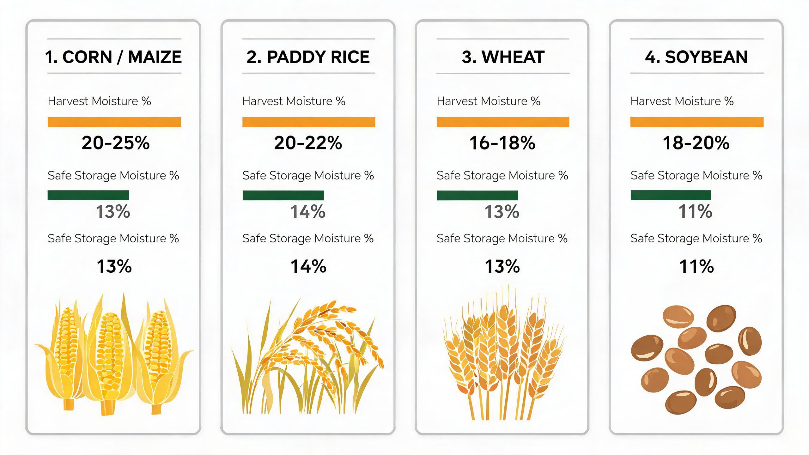
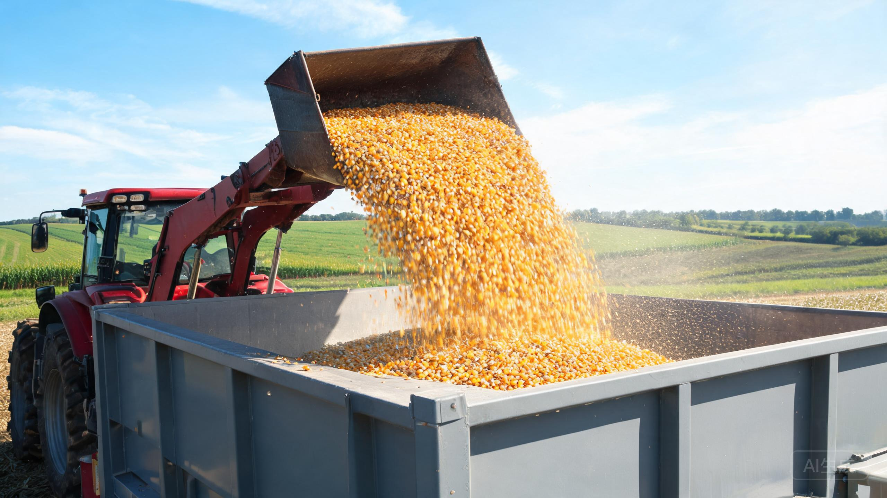
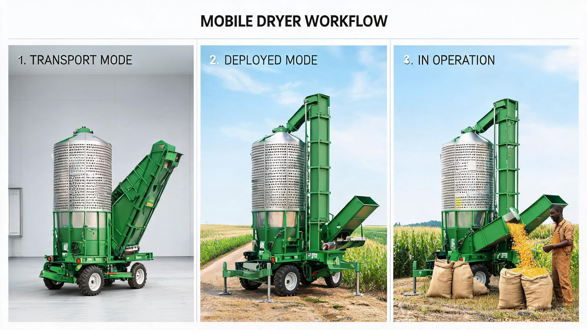
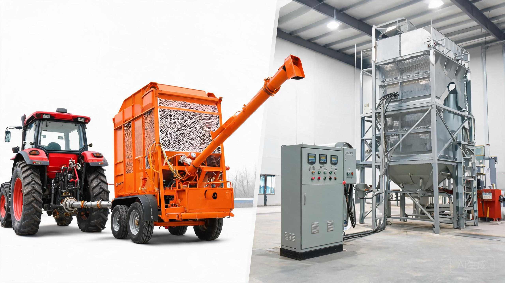
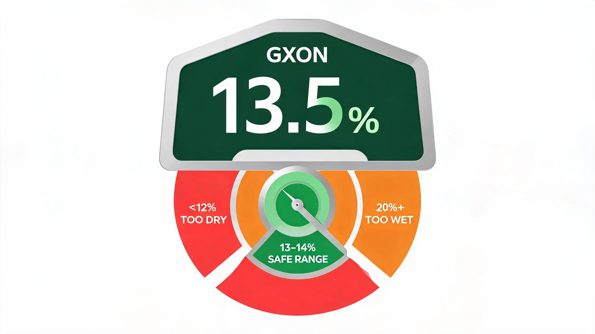
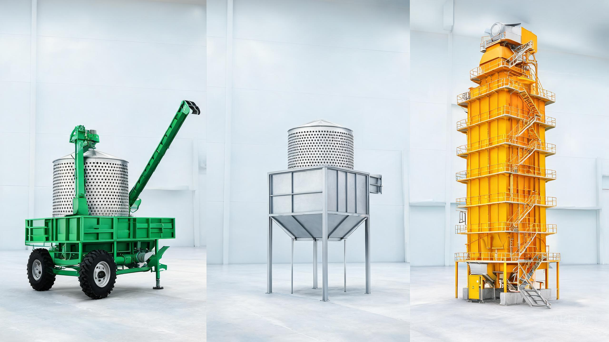

Why the Right Grain Dryer Matters
Every harvest is a race against time — and moisture.
Grain fresh from the field typically carries 20–30% moisture, far above the 13–14% needed for safe storage. Left to dry naturally, it sits exposed to rain, humidity and slow-moving air — the exact conditions where mold, mycotoxins and aflatoxins take hold. The result is painfully familiar: shriveled kernels, weight shrinkage, rejected loads, and a season's work sold at a fraction of its value.
A dryer that doesn't match your operation makes the problem worse in three ways:
- Spoilage losses. An under-sized dryer can't keep up with harvest pace, so grain waits in heaps — precisely where mold thrives.
- Hidden operating costs. An over-sized machine burns fuel you don't need and sits idle most of the year, eating your margin.
- Quality damage. Over-drying cracks kernels and destroys milling and germination value; under-drying leaves grain unsafe in the bin.
A correctly matched dryer pays for itself in the first season — cutting losses, holding grain quality, and letting you sell "dry grain at a dry-grain price."
Key Factors to Choose a Grain Dryer
1. Grain Type — Not All Grain Dries the Same Way
Each crop has its own drying physics. Temperature tolerance, harvest moisture, and safe-storage moisture are all crop-specific, and they change the real capacity of the same machine.
| Crop | Typical harvest moisture | Safe storage moisture | Drying behavior |
|---|---|---|---|
| Maize (corn) | 25–30% | 13–14% | Dries fast; tolerates higher hot-air temperatures (up to ~90–110°C) |
| Paddy (rice) | 22–26% | ~14% | The most delicate crop; must be dried gently at 45–55°C to avoid cracking |
| Wheat | 16–20% | 13–14% | Intermediate; needs even airflow to protect germination |
| Soybean | 16–20% | 12–13% | Brittle seed coat; low temperature and gentle handling required |
The same dryer handles different crops at different rates. For example, a 31.5 m³ hopper holds roughly 23 tons of maize but only 17 tons of paddy per batch — because paddy is lighter, and it must be dried more gently. When comparing models, always tell your supplier which crops you actually grow and your target quality (feed vs. milling vs. seed).

2. Daily Output — Size by 24-Hour Capacity, Not Batch Size
The real measure of a dryer is tons per day (TPD) over 24 hours — not the batch size printed on the brochure. Two dryers with the same batch size can differ in daily output depending on cycle speed, airflow and automation.
A practical way to size your machine:
- Estimate your peak harvest-day volume = (hectares × average yield) ÷ (days you can afford to wait before drying).
- Compare that number against a dryer's daily capacity on your specific grain (dryers are often rated on maize; paddy output is lower).
- Add a safety margin of 20–30% — weather delays and bumper years happen.
Rough benchmarks:
| Your peak daily volume | Capacity you need |
|---|---|
| < 20 tons/day | Small mobile or batch dryer (5–10 T per batch) |
| 20–40 tons/day | Medium mobile or batch (10 T per batch) |
| 40–80 tons/day | Large mobile / dual-power dryer, or multiple batch units |
| 100+ tons/day | Continuous tower (120–500 TPD) |

3. Working Site & Mobility — Do You Need to Move It?
Where your grain is, and where your power is, decides your machine type:
- Multiple fields, rented land, or no permanent site → a mobile dryer that comes to the grain.
- A fixed yard with year-round operation → a fixed batch dryer or tower (cheaper per ton, no chassis needed).
- Remote fields with no 3-phase grid → a PTO-driven model that runs off your tractor.
A well-built mobile dryer should move like a machine, not a project: foldable elevator and hopper, transport height under 4.5 m, and setup in about 30 minutes. For drying-service businesses — towing from farm to farm and charging per ton — mobility is the whole business model.

4. Energy & Power — Fuel Costs and Electricity Requirements
Fuel is your single largest operating cost, so the choice deserves real thought:
| Fuel | Best for | Watch out for |
|---|---|---|
| Diesel | Maximum mobility and off-grid operation; integrated fuel tanks turn the dryer into a self-contained "drying station" | Highest cost per unit of heat |
| LPG / Propane | Clean-burning, food-grade grain quality | Requires pressurized tanks and storage regulations |
| Natural gas | Cheapest per BTU, very clean | Requires a pipeline — fixed location only |
| Biomass (husks, pellets, wood) | Low, renewable fuel cost where agricultural waste is plentiful | Needs a larger furnace footprint and dry fuel storage |
| Coal | Intense, steady heat for very large towers | Needs indirect heating + filtration to keep grain pure |
Many modern dryers accept multiple fuels, so you can switch with market prices. For food-grade rice or milling corn, indirect heating (with a heat exchanger) keeps flame, smoke and ash completely away from the grain.
Electricity is the second decision. Most fixed and mobile dryers run on 3-phase power, 380V, 50/60Hz. Before you buy:
- Check that your site actually has a 3-phase supply — a rural single-phase line cannot run a dryer.
- If the grid is unreliable or absent, plan for a diesel generator sized to the dryer's working power (e.g., a 20 T mobile dryer needs roughly 49 kW / 100 kVA supply), or choose a PTO model that runs directly from a 90 HP tractor — no electrical hookup required.
- Ask the supplier for the full electrical specification (working power, kVA, phases, Hz) in writing.

5. Final Moisture Requirement — Know Your Target
Different buyers and uses demand different targets:
- Storage grain → ~13–14% moisture, uniform across the batch.
- Milling rice / flour corn → even moisture with minimal cracking.
- Seed grain → low-temperature drying that preserves germination rate.
- Feed grain → faster, hotter drying is acceptable, but overheating still damages protein value.
State your target moisture when requesting quotes — it directly changes drying time, fuel consumption, and which machine is right for you.

Common Grain Dryer Types & Who They Suit
Mobile Grain Dryers — Small farms, cooperatives, drying services
Portable batch units (roughly 5–20 T per batch, 10–80 TPD), multi-fuel, and available with 3-phase or PTO power. They're built for operations that handle grain across multiple sites:
- Smallholders and cooperatives who pool resources on a shared dryer.
- Emerging professional farms (50–200 ha) harvesting at optimal moisture.
- Grain collectors who buy wet grain at a discount and stabilize it on-site.
- Entrepreneurs running a "mobile drying service" from farm to farm.
Batch (Circulating) Dryers — Medium farms and grain stations
Fixed-installation units (5–32 T per batch) with a bucket elevator for gentle, low-breakage circulation. Ideal for:
- Medium farms that want a permanent, compact drying line.
- Rice and feed mills with modest daily intake.
- Seed producers who need batch-tracking to keep varieties separate.
- Dual-use models that dry and seal for storage in one unit — practical for traders who buy, dry, hold and sell later.
Continuous Tower Dryers — Depots, mills, and large processors
High-volume towers (120–500 TPD), operating 24/7 with automated feed and discharge. Indirect heating keeps grain pure for food-grade and export markets. Built for:
- Commercial grain depots and silo terminals.
- Feed mills and flour mills that need a constant supply of dry grain.
- Large cooperatives consolidating harvest from dozens of member farms.
- Exporters who must hit exact moisture specs for overseas contracts.

Scenario → Model Quick Map
| Your situation | A suitable starting point |
|---|---|
| Smallholder or small coop, < 20 ha, several small fields | G-MR-5 (5 T/batch, 10–20 TPD) |
| Medium farm, one fixed yard, limited 3-phase | G-MR-10 (10 T/batch, 20–40 TPD) or fixed 10 T batch |
| Large farm / drying-service business, no grid in fields | G-MR-20 (20 T/batch, 70–80 TPD, PTO + electric dual power) |
| Grain trader who wants to dry and store in one unit | G-SR-30 / G-SR-32 (30–32 T batch, dual-use dryer & silo) |
| Grain station or mill, 100–200 TPD intake | G-CT-120 / G-CT-200 continuous tower |
| Large processor or grain hub, 200–500 TPD | G-CT-300 / G-CT-500 continuous tower |
Model references are examples within one manufacturer's range (GXON AGRO, 5–500 TPD). The logic of matching scenario → capacity → machine applies to any supplier — and it's exactly the conversation you should have before you sign a quote.
Common Mistakes in Grain Dryer Selection
- Buying on batch size, not daily output. A big batch that cycles slowly can still be a low-throughput machine.
- Ignoring grain type. Drying paddy like maize cracks the rice and destroys its milling value.
- Forgetting the power supply. Assuming "any dryer will run on my line" — when your site only has single-phase, or the 380V 3-phase supply isn't available, and no PTO option was chosen.
- Underestimating fuel logistics. Choosing a cheap-per-BTU fuel that isn't actually available near your farm.
- Chasing the lowest machine price. The dryer is bought once; fuel and maintenance are paid every season. Total cost of ownership matters more.
- No plan for support. When grain is wet, time is money — you need a supplier with spare-parts stock, technical guidance within 24 hours, and a service record.
Final Buying Tips
Before you compare quotes, you should already know four numbers: your grain types and moisture targets, your peak daily volume, your site's power (3-phase 380V, generator, or PTO), and your cheapest reliable fuel. With those four answers, a good supplier should be able to recommend one or two machines — not ten.
What to look for in the equipment itself:
- Thermal efficiency — a well-designed heat exchanger can reach up to ~95% efficiency, meaning more heat into the grain and less up the chimney.
- Grain-contact materials — stainless steel (e.g., 304) in contact with wet grain resists corrosion and lasts far longer.
- Gentle handling — bucket elevators and controlled airflow keep crack rates low.
- Automation — temperature and moisture sensors prevent over-drying and protect grain quality overnight.
- After-sales commitment — parts availability, online guidance within 24 hours, and installation support wherever you are.
Still unsure where to start? That's normal — the right machine depends on your specific crop, climate, harvest window and budget. Use the free solution design offer below to get a recommendation based on your numbers, not a brochure.